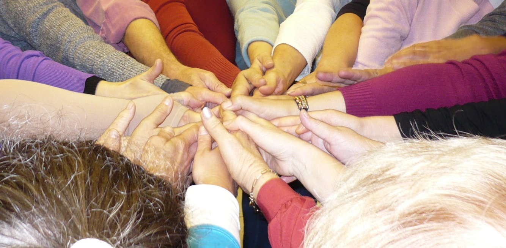
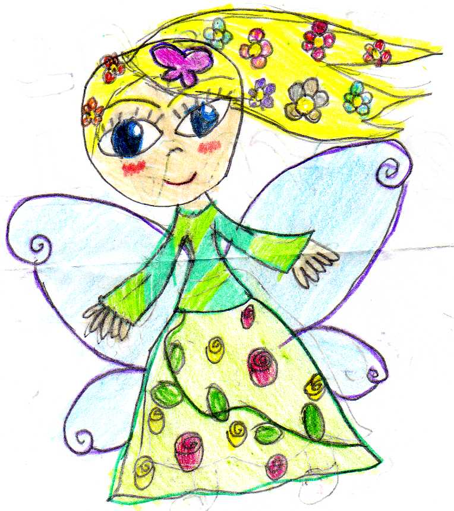
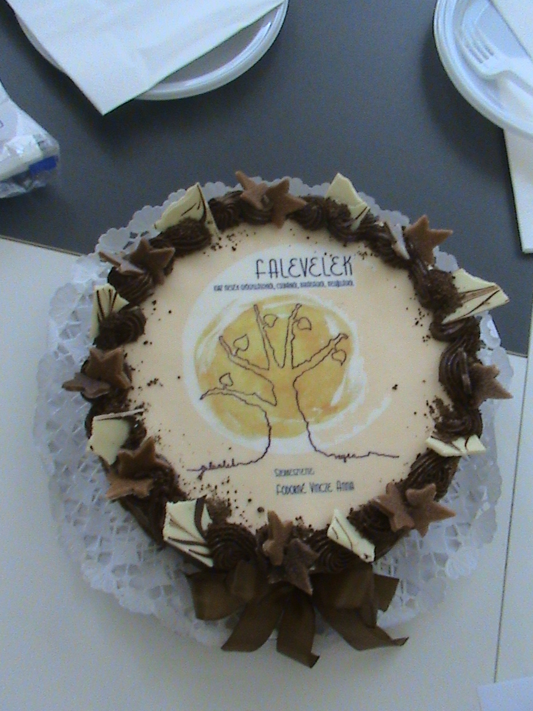
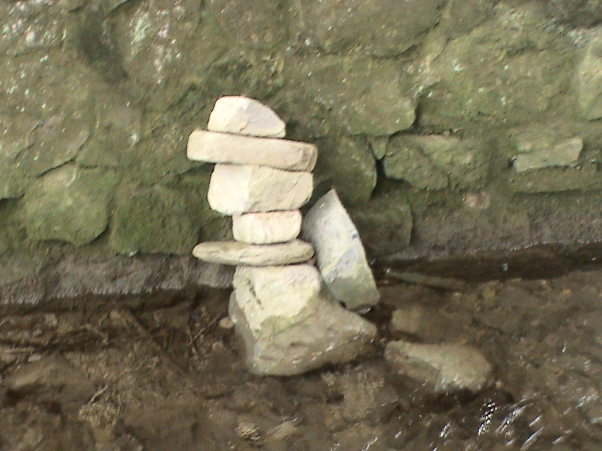
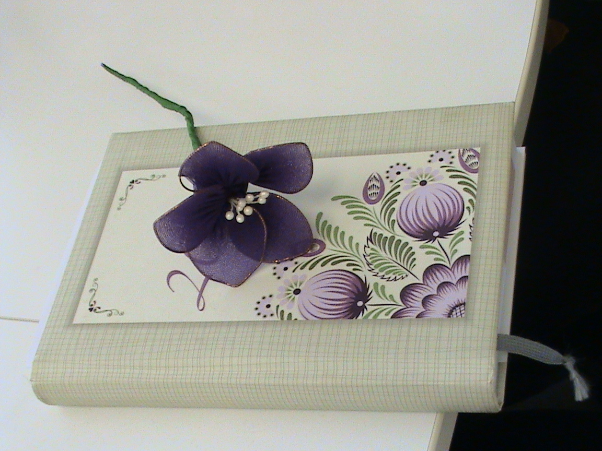
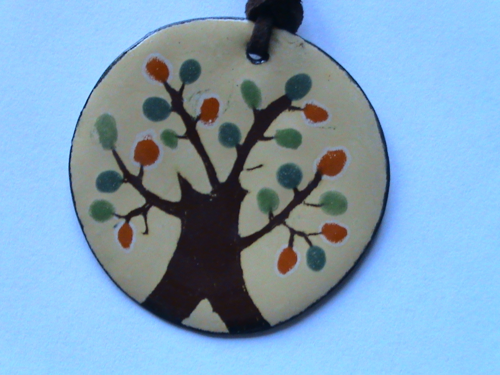

Média megjelenések

Csoporttagok levelei
A Simonton tréning tapasztalatairól
"Sohasem egy külső problémát kell megoldani- hanem mindig önmagunkat." (L. Edit)
"Amit kaptam: megértést, elfogadást, önbizalmat. " (Sz. Mónika)
"Mit adott nekem a Simonton? Megtaláltam az utat önmagamhoz. Mindenre van megoldásom, nem ismerem a lehetetlent. Emellett egy szuper társaságot ismertem meg!" (Tné Cs. Adriennn)
"Csinálj minden nap valami olyat, ami boldoggá tesz, hogy a lélek szeressen benned lakni!" (Kné M. Judit)
"Gyógyulásom a kezdetektől
2013.december: egy rossz mozdulat, amitől az egész életem megváltozott.
Félév múlva orvosi segítséget kértem. Több szakember értetlenül nézett rám, mondván nem indokoltak a fájdalmaim. Újabb 6 hónap telt el rengeteg vizsgálattal, az ok, amiért nem szűnnek a panaszaim nem értették. Végül orvost váltottam, majd ő is mindent előröl átvizsgált. Közben éreztem itt valami nagyon nincs rendben, iszonyatosan fáradt voltam, erőtlen és minden csontom fájt. A csukló fájdalmamat sem tudták mivel megmagyarázni nemhogy mindezt. Kiderült autoimmun vagyok, azonnal bázis terápiát kaptam. Diagnózisaim: Egyéb psoriasisos arthopátiák, Gyulladásos spondylopathia(k.m.n.), Sjögren szindróma(k.m.n.), Vashiányos anaemia vérveszteségtől(krónikus). Kicsit megnyugodtam, hogy nem én reagáltam túl a dolgokat, hanem tényleg jó volt a megérzésem és nagy volt a baj. Biztos voltam abban majd a gyógyszerek meggyógyítanak. Annyi mindenen voltam túl az életem során már ez az autoimmunos dolog nem foghat ki rajtam. Tudtam pozitív gondolkodásra, nyugalomra, stressz mentes környezetre van szükségem. 2014 december 23-án hagyhattam el a kórházat 3 hét kezelés után. Elhatároztam én leszek az 1. aki teljesen meggyógyul, gyógyszerek nélkül fogok élni, teljesen tünetmentesen és fájdalmak nélkül. Újra sportolni akarok, és élni tovább az életemet. Nem érem be annyival, hogy tünet mentes vagyok NEM. MEG AKAROK GYÓGYULNI!
A sors összehozott, Annával, amiért hihetetlenül hálás vagyok. Nem felejtem el az első találkozásunkat, ahogyan az első kérdését sem. Anna: Szereted a tested? Én: NEM, habozás nélkül rávágtam.
Elkezdtük a Simonton tréninget, ami hatalmas pozitív élmény volt én rögtön láttam mindent, mintha egy mesét néztem volna. A folyóról elsőnek és azóta is egy hatalmas vízesést láttam, ami nagyon gyönyörű, a puszta látványától már nyugalom és boldogság töltött el. Majd megkezdődött a belsőutazásom. Láttam sok fehér immunsejtet, mosolygósak, vidámak két kezük van rajta 3-3- ujj és 2 lábuk 2 szemük, szájuk és teljesen fehérek. Az ereimben mászkáltak vidáman mindig együtt, legjobban M&M-s cukorkákhoz hasonlítottak. Az immunjárőrön a kiképzőosztag vezetőn kék baseball sapka látható. A sejtek fejlődését az őrzők figyelik, gondozzák, védelmezik, amíg az iskolába be nem kerülnek. Az őrzők körülállták a sejteket öntözgették vízzel öntözőkannából, hogy minél szebben fejlődjenek. Közben az immunjárőrök nem tétlenkedtek az elöregedett vagy selejtes sejtet hordágyra fektették és elvitték. Helyébe azonnal új sejt állt be. A kifejlődött sejtek az iskolában megtanulták hogyan kell felismerni a betolakodókat és saját testvéreiket. Azt is elsajátították, hogy minden immunnak más színű és jelzésű zászlója van. Négyet különbözetnek meg: fehér alapon piros csillag, piros- fehér csíkos, sárga- zöld csíkos, és sima fehér. Mindezt egy tanár táblára függesztett képekkel illusztrálta. Minden anyag ami már feleslegesnek bizonyult elsőnek a májba került, sötét lilás bordós színű ami mellett az immunok eltörpültek. Futószalagokra helyezték az elhasznált anyagokat, majd becsomagolták akár egy karácsonyi ajándékot még masni is volt rajta. Az epe és a patkóbél között autópálya található, hogy minél gyorsabban eltudja hagyni a testemet a méreganyag. Következett a bélrendszer és a vesék. Az utóbbi egyforma zöldes sárgás színűek,de más alakúak,nagyságra körülbelül megegyezőek. A bőrön keresztül is távozik felesleges anyag. A méreganyagokat talicskával tolják a többi immunhoz. Ezt követően a bőr falához érve minden egyes immun kinyit egy ablakot és kiöntik a nem kívánt anyagokat. Majd a tüdőbe látogattunk, mindig az ereken keresztül jutottunk el egyikpontból a másikba. Az erek üresek és világosak. A tüdő nagy és egyben hatalmas, huzatos sötétkék színű és telis tele van erekkel. Amik piros színűek, a vastagtól az egész vékonyig minden megtalálható a tüdőn. Mély kilégzéssel onnan is távozik a felesleges anyag. Az immunok elvégezték mindennapos rutinjukat mindenki örül,boldog és szeretettel ölelik egymást.
Heteken keresztül mindent szinte ugyanúgy láttam a meditációim során. Gondoltam technikát váltok,diktafonos megoldás,más felolvassa a szöveget.. semmi nem volt olyan,mint amikor együtt csináltuk. Majd szépen elkezdtem olvasni az inmaginációt és arra próbáltam koncentrálni ,hogy Anna hangját hallom. És sikerült!!!! Ellazultam behunytam a szemem és minden ment a maga sorrendjében, mindent tudtam mi miután következik gyakorlatilag a szöveget is kívülről tudtam.
De a fordulópontot a csoportos foglalkozáson értük el. Hogy mi váltotta ki nem tudom, de azóta is folyton változik minden A folyóról ugyanúgy egy vízesést láttam, de sokkal részletesebben, ahogyan a magasból lezúduló vízmennyiséget végig kör alakban sziklák ölelték körül csodálatos látvány. A sziklák nem csak egyszerű kör alakban helyezkednek el.. sokkal több ennél, rendszer van bennük, ahogyan egyik szikla a másikhoz ér, s mind különböző nagyságúak, melyek szinteket képeznek, és így haladnak le egészen oda ahová megérkezik fentről zúduló víz. Rengeteg látnivaló lett volna még, de eddig azért nem láttam szinte semmit, mert lemerült a nap a víz tükrében, most meg olyan erősen ragyogott, hogy teljesen elvakított. Hirtelen már az ereimben voltam, szinte rutinszerűen járkáltam nézelődtem az immunokkal mikor mögöttem leszállt egy helikopter, kék terepmintával és egy S.W.A.T. felirattal díszített. Benne rengeteg különlegesen kiképzett immunosztag, azért jöttek, hogy segítsenek az sejtjeimnek. Továbbhaladva furcsa dolgot láttam, ami rettenetesen rosszul esett, egyik immun a másikat pofozta. Játéknak tűnt, de nekem nem. Már az epehólyagnál jártunk a figyelő immun, aki szemmel tartotta magas toronyból a szervet elkezdett kiabálni, hogy DUGULÁS. Jöttek is az immunok, majd a különleges csoport S.W.A.T. is és elhárították a problémát. Közben sokat nevettek, mert az immunok jóval kisebbek voltak,mint a S.W.A.T. csoport tagjai és nehezen fértek el. A különleges csoport tagjai gördeszkákkal szelték az utat az ereimben jóval gyorsabban odaértek egy-egy kórokozóhoz,mint a saját immunjaim akik gyalogosan közlekedtek. Májhoz érve eszméletlen sok hulladékra lettünk figyelmesek, alig győzték a munkát, az erekben továbbra is szárasság van. Vesék és a tüdő következett itt minden a normális kerékvágásban haladt, de a bőrhöz érve szintén sok méreganyag volt felhalmozva s nem győzték az immunok. A S.W.A.T. tagjai kék terepmintás ruházatban basebol sapkában jelentek meg,izmos testtel rendelkeztek.
Sosem tudom mennyi ideig tart a meditáció, közben elvesztem az időérzékelésemet. Ismételten hatalmas élményekkel gazdagodtam, először és utoljára láthattam mit is jelent az autoimmun betegség: egyik immunsejt a másikat bánthatja hibás információt kapva saját magát pusztítja. Illetve rájöttem az nem normális dolog, hogy az ereimben gyalogosan v épp gördeszkával közlekednek az immunok, hiszen hol van a vér??? Itt jön a képbe az, hogy a meditációk során valós képet kapunk belsőnk állapotáról, hiszen krónikus vérszegénységben vas hiányos állapotban is szenvedek. S első perctől kezdve láttam, hogy üresek, de mivel eddig nem hallottam őket beszélni csak láttam a történéseket nem figyeltem oda a leg egyértelműbb jelre. Rájöttem arra is, ha mindezekről valós képet kapok, nincsenek határok, bármit amit szeretnék látni vagy tudni az állapotáról ez mind lehetséges. Igazándiból mi magunk vagyunk önmagunk határai.Az elménk rendelkezésünkre bocsájt minden segítséget, csak rá kell jönni, hogyan is működünk. Megtanulni belső jelzéseinkre hallgatni. Illetve először soha ne küzdj a betegségeddel, hiszen ez is te vagy, inkább próbáld megismerni. Okkal kaptuk, valamit megakar mutatni a szervezet, hogy másképp csináld, hogy végre odafigyelj rá. Persze vannak genetikai okokból fakadó betegségek, de ezek eseteiben is lehet gyógyulni. Hogy ki erre az élő példa? ÉN! Mindennapjaim részévé vált az úgynevezett bázis terápia. Hogy mit is jelent ez röviden? Gyakorlatilag heti 1 nap úgynevezett Trexánt ill. többi napokon folsavat és vasat szedtem szteroiddal. 4 hetente nagylabort kellett csinálni, hogy máj és a vese mennyire tolerálja mindezeket. Első perctől kezdve dokinak jeleztem én leszek az első, aki teljesen nyomtalanul meggyógyul ebből az állapotból. Hiszen orvosilag maximum csak szinten tartható az állapot és akkor is állandó terápiás kezelés szükséges hozzá. Én megmondom az őszintét rossz érzéssel vettem be a gyógyszereimet. Természetesen szót fogadtam, otthon tornáztam, nyújtottam sokat. Kezdtek rosszulléteim lenni az orvosságtól. Majd Életem részévé vált a meditáció, napi 5x is alkalmaztam/om. Bárhol bármikor lehet csak meg kell találni rá a megfelelő technikát. Ha bevásárolni indultam feltétlen tettem önmagamban egy belső utazást, majd megkérdeztem az immunoktól vajon mi lenne a legfontosabb élelmiszer, amire feltétlenül szükségem van. De nem csak ezekben lehet betekintést nyerni vagy változást elérni, bármin lehet változtatni. Végül már olyan rossz lelki állapotban vettem be szerdánként a trexánt, hogy most megint leszedálom a szegény immunokat, hogy elkezdtem lecsökkenteni az adagot szépen lassan fokozatosan. Egyre jobban éreztem magam, végre volt erőm felkelni és kicsit sétálni, hajat mosni és minden olyan tevékenységet megcsinálni, amit egyébként az életem része normális esetben. Volt újra erőm enni lelkileg és fizikálisan is. Nagyon nehéz időszak ez testileg és lelkileg is, hiszen az autoimmun, ha aktívvá válik teljesen 4 fal közé képes szorítani a beteget. A fájdalmakról nem is beszélve. De annyira fájt, annyira rossz volt, hogy pont emiatt nem adhattam fel a SIMONTON meditációkat. Ez vitt előre, hiszen orvosilag sok mindent nem tehetnek. És a kis belső hang mindig azt sugallta, hogy ne adjam fel, csináljam szorgalmasan, amit eddig ilyen kitartással sohasem. S végül meg lett az eredménye. Már csak a vas tablettákat szedtem, de úgy gondoltam, ha a többi orvosság sem hiányzik, már akkor megpróbálok koncentrálni a testemben levő vérállományra. Elképzeltem, hogy újra nagy mennyiségű vér van az ereimben mindezt 1 hónapon keresztül. Ez idő alatt nem szedtem be a tablettákat, majd a véreredményem a nélkül is tökéletes. A nagy hőségben nehéz volt közlekedni, ezért arra gondoltam, hogy az immunokkal ,,megbeszélem,, mikor a tűző napra kilépek rázzon ki a hideg és nem lesz az a rossz közérzetem. Bármilyen abszurdnak hangzik,de ez is működött. Szemüveges vagyok és a térlátásom nem a legszuperebb és arra is külön meditáltam, hogy az immonok ott is jótékony hatásukat fejtsék ki. Eltelt 6 hónap és folyton azon gondolkodtam vajon javult már a szemem? Nem éreztem jónak már amit használtam szemüveget, és végül igénybe vettem egy látásvizsgálatot és minden paraméterem javult. Folyton újabbnál újabb feladatokat tűzök ki magam elé, mint pl. a félelmeimet még jobban leküzdeni.
Bátran kijelenthetem, hogy nekem a SIMONTON tréning az életemet adta vissza. Rájöttem alapvető hiányosságokra magammal szemben, mint pl. nem figyeltem oda a jelekre, nem becsültem ömagam és nem én voltam az első. Nem szeretettem a testem, és önbizalmam sem volt. Hiszen ha önmagunkban nincs harmónia ez testileg, lelkileg valahol tüneteket eredményez. Kérdés az, hogy kinek mekkorát? Én jó nagy adagot kaptam, pedig olyan biztosan állítottam, én egészségesen élek,sportolok megválogatom az ételeimet, de mindez kevés. Már nem stresszelem magam felesleges dolgokon, mint pl hivatalos ügyeket kell intéznem stb. Teljes nyugalommal és harmóniában élem a mindennapjaimat.
És ha most megkérdezné Anna: Szereted a tested? A válaszom: IGEN."
(Mosoly)

"Érdeklődőként jelentkeztem és vettem részt a tréningen, mivel életem és munkám részét képezi a daganatos betegségekkel való foglalkozás. Tanulni szerettem volna, tudni sokkal többet erről a betegségről, a gyógyulás lehetőségeiről és a kutatási eredményekről.
A Simonton tréning - ebben a tekintetben - minden várakozásomat felülmúlta! Olyan alaposan járja körül e betegséget kiváltó testi-lelki- szellemi, környezeti hatásokat és olyan megdöbbentően könnyedén tárja elénk saját felelősségünket és öngyógyító lehetőségeinket, ami bámulatba ejtő.
Minden egyes foglalkozás újabb és újabb ismeretekkel gazdagított. A tanítási folyamatnak egy számomra eddig teljesen ismeretlen módszerét tapasztaltam. Nem kaptunk száraz, alig érthető tananyagot, melyet otthon be kellett biflázni. Önmunkálkodásra voltunk kényszerítve! No, egyáltalán nem nádpálcával, vagy ostorcsattogtatással, ennél az elavult módszerné sokkal jobbat eszelt ki az a s házaspár. Ismét csak bizonyítást nyert, hogy tenni és dolgozni kell az egészségünkért, és nem csak várni a sült galambot. De ehhez a munkához kedvet is kaptunk a tanfolyamon, mert még a nehezebb gyakorlatok végzésénél is rendelkezésünkre állt megfelelő idő, türelem és kedvesség az előadónk részéről.
A progresszív relaxáció néhány gyakorlat után már szinte magától ment.
A gyógyító imagináció szövegezése érthető volt és világos, könnyen lehetett átvinni a gyakorlatba.
A csoport kis "remekművei" rajzai a selejtes sejtek ártalmatlanítására jó kis derültséget okoztak. Az volt a fontos, hogy mindenki el tudta képzelni ezt a fontos jelentet!
Nem tértem ki minden témára, amivel foglalkoztunk a kurzuson, de a nagy részére igen.
Összegzésül még el szeretném mondani, hogy mindenkinek csak ajánlani tudom a Simonton tréninget, akár érintett a betegségben, akár nem.
Igen sokat tanultunk, sok új ismeret birtokába jutottunk, melyet haszonsítani fogunk további életünkben. Ezt nagyon köszönjük előadónknak, Fodorné Vincze Annának, aki angyali türelemmel foglalkozott velünk, igazi szakértelemmel oktatott és igyekezett megismertetni velünk ennek a módszernek a lényegét! Igen jó hangulatban teltek a foglalkozások, oldott, pozitív légkörben, mint egy igazai otthonban és családban! A csoport tagjai megszerették egymást. Igyekszünk továbbra is tartani a kapcsolatot, címeket, e-maileket, telefonszámokat cseréltünk. Kinek-kinek hasznos tanácsok is igyekeztünk adni. Mert másnak ugye, könnyebb!
A többi már csak rajtunk múlik, a kitartásunkon, az önmunkálkodásunkon, a gyógyulni vágyásunkon! Hiszen ez a tréning szólhatott volna a többi betegségről is! Azok esetében is alkalmazható!
Köszönjük ezt a szép és hasznos programot mindazoknak, akik lehetővé tették Egerben is a Simonton-tréning megismerését és alkalmazását!"
Tisztelettel és szeretettel:
Emberné Ocskay Zsuzsanna
Eger, 2012. január 17.
Polonkai Józsefné - az Egri Amazon Klub elnökének levele
"2011 szeptemberében, amikor jelentkeztem a Simonton- tréningre, akkor számomra nagyon elkeserítően kiábrándító volt az életem. Kétszer műtöttek ugyanarra a daganatra, majd végigjártam egy 25 kezelésből álló sugárterápiát Miskolcon. Mindennapos oda-vissza utazással, november közepétől január közepéig. Majd a rákövetkező hónapban súlyos autó balesetet szenvedtem. Ilyen előzmények után igencsak sötéten láttam a jövőmet!
Egy-a rákliga által rendezett előadáson ismerkedtem meg Fodorné Vincze Anna pszichológussal aki a második Simonton- tréninget szervezte.
Megkapó volt számomra, hogy milyen szeretettel beszélt az elesett, daganatos betegséget átélt emberekről, a gyógyulási folyamatokról és arról, hogy ha időben felfedezik a rákot, van egy olyan módszer, amely elsajátításával a beteg a saját öngyógyító erőit tudja felszínre hozni és mozgósítani a gyógyulása érdekében! Az orvosi gyógykezelés, műtét, sugár, kemoterápia mellett nagyon fontos a beteg lelki támogatása is.
A tréningen egy nagyon jó hangulatú kis csoport alakult ki. Megismertük egymás betegségeit, s a még kezelés alatt lévő társainkkal együtt izgultunk a jó eredményért.
Megtanultuk, hogy a pozitív gondolkodás az egyik legfontosabb tényezője a betegség testi és lelki feldolgozásának.
A harag pozitív kezelését, a konfliktusok, a neheztelések, a stressz oldását példákon és feladatokon gyakoroltuk.
Megtanultuk a megoldandó problémákat átkeretezni, s azt, hogy a saját problémánkat merjük a fontossági sorrend elejére tenni, mert: a jelmondat:” Bármit gondolj is magadról, több vagy annál.”
Foglalkoztunk a relaxációval, az érzelmek negatív, (romboló) pozitív (előrevivő) levezetésével.
Megismerkedtünk a gyógyító imagináció fogalmával: rajz formájában „irtottuk ki” a szervezetünkben meglévő ráksejteket. Sok kis remekmű született és sokat nevettünk a jobbnál jobb ötleteken. Kis csapatunk minden héten szívesen és örömmel találkozott egymással és Annával, akinek köszönhetően megváltozott az életszemléletem, nem félek a jövőtől, mert tudom, hogy a betegséget igenis le lehet győzni!
Azóta is minden hónapban rendszeresen találkozunk egymással, ahol több csoportból is jönnek társaink és örömmel osztjuk meg az eltelt idő eseményeit.
A teljesség igénye nélkül próbáltam kis ízelítőt adni az Egerben lévő Simonton- csoportról és tevékenységéről!
Sok szeretettel: Polonkai Józsefné"
Eger, 2013. 10. 21

Simonton- Virág Judit, a Magyar Rákellenes Liga Miskolci Alapszervezete elnökének levele
„Nem elég a jóra vágyni,/ A jót akarni kell!/ És nem elég akarni: /De tenni, tenni kell!”
Váci Mihály e sorai igazak a daganatos betegeink gyógyulására, melyre sokszor csak vágynak a tagjaink: elfogadják a kezeléseket (kemo,sugár) és nem hiszik el, hogy ők is nagyon sokat tehetnek a gyógyulásuk érdekében.
Ebben segített A Simonton – módszer megismerése. Megmutatta, hogyan vehetünk részt egészségünk visszanyerésében, egészségünket mi módon őrizhetjük meg.
A gyógyító képzelet arról szólt, mit tehetünk az orvosi kezelésekkel együttműködve annak érdekében, hogy egészségünket újra visszanyerjük. Megtanultuk mozgósítani belső erőforrásainkat, és azt, hogy nekünk is tevékenyen részt kell venni a gyógyulási folyamatban.
Szerencsések vagyunk, hogy Fodorné Vincze Anna volt a tanítónk. Jó volt, hogy kiscsoportokban folytak a foglalkozások. Óriási segítséget nyújtott a negatív lelkiállapotból, krízisből való kilépéshez. Először negatív érzéseinket éltük meg. Újból elképzeltük alakját,színét,stb….megpróbáltuk tehermentesíteni szervezetünket a betegségtől, földolgoztuk, majd számba vettük, hogy életünk különböző területein mik szereznek nekünk örömöt. Ez segített abban, hogy fölálljunk. A jó az volt, hogy nemcsak beszéltünk róla, hanem gyakoroltuk is a gyógyulás, a boldogság elsajátítását.
A tanfolyam optimizmusunkat növelte: reményt adott a jövő tekintetében, hitet, hogy minden, ami történik a fejlődésünket szolgálja. Kitartásra, türelemre, állhatatosságra tanított. Jó társasággá kovácsolt, baráti kapcsolatokat alakított ki. Hozzájárult, hogy Miskolcon egy jól működő Simonton klub jöjjön létre, mely fényt és reményt adjon arra rászorulóknak, érdeklődőknek. Magunk részéről csak biztatni tudjuk azokat, akik meg szeretnék ismerni a Simonton-t. Hajrá Egészség! Hajrá gyógyulás! Hajrá leendő klubtársak!"
Virág Judit, a Magyar Rákellenes Liga Miskolci Alapszervezetének elnöke
Köszönet, Kedves Anna! Köszönet Mindenért! (Ismered ezt a zeneszámot, ugye?) Holnap de. megyek Ct-re, nem tudok jelen lenni az utolsó foglalkozásodon, de annak a csokornak (remélem,lesz egy csokor!), amit a csoporttól kapsz majd, annak egyik kicsiny (de pompás!) szirma az én "ajándékom". Szeretettel. Szabó Imre (örök barátod!)

Az Edelényi Csoporttagok írták:
„A gondolkodásomat, a hozzáállásomat a betegségemhez, a hozzám tartozókkal való kapcsolatomat, nézetemet változtatta meg. Fel merem magamat vállalni, és főleg merek véleményt mondani, - kérni, és elfogadni.
Az emberi szív szeretetből áll össze, adj ma egy darabot másoknak belőle. Ne félj, hogy elfogy, hisz neked is adnak. Ezért van értelme e gyönyörű napnak. Adj belőle bátran, úgy lesz szép az álom. Legyen nektek csodaszép e mesés karácsony! Békés, boldog Karácsonyt és Újesztendőt! Almási Lajosné
Hálás vagyok annak a személynek, (Julikának) hogy megszervezte ezt a tréninget, hálás vagyok a pszichológusunknak, Annának, aki végtelen türelemmel, szeretettel, nyugalommal, igazi szakember lévén fokozatosan, lépésről lépésre vezetett be minket a Simonton-program megismerésébe, gyógyító tevékenységének a lényegét megízleltük, s remélem, fokozatosan elmélyülve azokba a sokrétű irodalom terén, amit Anna ajánlott- segít személyiségünk egészséges létének a megőrzéséhez. Szemléletbeli változásunk hasznos környezetünk, családunk pozitív életvitelének megvalósulásához. Saját egészségem (testi-lelki) pozitív irányba változott. Jól érzem magam. Buczkó Zoltánné
Sok örömet és boldogságot hozott az életemben. Örülök neki, hogy eljöttem, és most már sajnálom, hogy vége van, de azt hiszem, hogy most már tudom ezeket hasznosítani. Szeretném, ha ez a kis csoport továbbra is összetartana, és újra találkoznánk. Hálás vagyok az előadónak, hogy ide is eljött közénk, ezt a jó módszert tanította nekünk. Köszönettel és szeretettel gondolok rá. Jakab Gáborné
A tréning nekem nagyon tetszett, mindenki problémájából sokat lehet tanulni, okulni. Mindent tudok belőle hasznosítani. Berentésné Ágnes
A gyógyító imaginációt tudom használni belőle, és az élethelyzetek átkeretezését, az indulat kezelést. Gyakorolni kell. Több alkalommal kellene összejönni. Javaslom a gyakorlatokat több alkalommal kell gyakorolni. Pacsesz Attila
Nagyon jól éreztem magam a foglalkozásokon, bár nem mindig tudtam elejétől a végéig itt lenni! Sok hasznos információt hallottam a stressz kezelés terén és látásmódom megváltoztatásához, a betegségből való gyógyulás megkönnyítéséhez. A jó hangulatú beszélgetések feldobják az embert a fárasztó nap után, és eltereli a figyelmet a negatív dolgokról. Feltöltődve végződtek a szerdai napjaink! Köszönjük Neked mindezt! Boldog Karácsonyt és Újévet kívánok.
Ui: Jó tanácsként, a beszélgetéseket jobban kellett volna terelni a témához kötődően, mert egyesek nagyon szerették elvinni a fonalat más irányba, így kevesebb idő maradt időnként a lényegre. Dr Bartos Ágnes
Nagyon hasznos volt. Számomra ez a tréning pont jó időben volt- mélyponton voltam. Mindent tudok belőle hasznosítani. Gyakran átolvasom és alkalmazom. Köszönöm szépen.” Benkéné Erika
A közérzetem sokkal jobb.
Nagyon jó hatással van rám a Simonton-csoport. Érthetőbbé váltak az elmúlt események miértjei. Csoportos beszélgetések alkalmával a probléma megoldás könnyebbé vált.

A Hatvani Csoporttagok írták:
Nagyon jó, hasznos, folyamatában is alkalmazható, másoknak is ajánlom. Bár a gyógyításról szól, de megelőzés céljából, a mindennapok sok problémája, mind-mind megoldható a tanultakkal. Szívesen folytatnám egy haladó szinttű csoporttal. Anna kiváló előadó, fontos az, hogy érthetően, empatikusan adja elő a tananyagot. Stressz oldására, pánik leküzdésére, konfliktusok kezelésére tudom alkalmazni.
Bordás Józsefné
Megtanultam, hogy van választásom, nem kell beletörődni a félelembe, sötétségbe. Az adott élethelyzetben mindig van „lehetőség”, de ehhez nem elég nézni, látni is kell! Továbbá megtanultam azt is, hogy igenis fontos vagyok! Figyelek magamra és a környezetemre. Rájöttem, ha én nem fogadom el saját magam, akkor más sem fog elfogadni. Azt hiszem, a jövőben ezen kell dolgoznom. Czinke Krisztina
Számomra jó hatással volt a tréning, én élveztem a csoportos foglalkozásokat. Sokat tanultam, amit a javamra tudok fordítani. Sok új embert ismertem meg, és új barátokat is szereztem. Anna egy csodálatos ember, élveztem az előadásait, az emberségét. Maksáné Anita
Számomra legfontosabb, hogy bármilyen problémával indultam el otthonról, bármilyen kellemetlen körülmények zavartak, a foglalkozásokon (tréning) ki tudtam kapcsolódni, jól éreztem magam. Nagyon érdekelt a többi társam problémája, sokat merítettem belőle a magam nehézségei megoldásában, rácsodálkoztam, hogy más szemszögből nézve egyszerűbbnek tűnik az én „nagy” bajom. Sándor Lajosné
Nagyon köszönöm, hogy részt vehettem ezen a tréningen, Anna egy csodálatos ember, akinek maga a lénye is nagyon pozitív hatást gyakorolt rám. A módszer nagyon hatékonynak bizonyult az én esetemben, és még egyszer köszönöm! Szilágyiné H. Csilla
Nagyon jól éreztem magam. Sok lelki támogatást kaptam. A képzelt gyógyítást naponta többször alkalmazom és jó hatással van rám.
A Hatvani Egészséges Csoport Tagjai írták:
Nagyon hasznos volt részemről az előadás. Sok jó embert megismertem. Jól éreztem magam a csoportban. Megtanultam azt is, hogy sok jó apró dolgoknak is tudok örülni. Nagyon köszönök mindent! Petri Sándorné
A tréningen hallottakat a mindennapjaimban hasznosan fel tudom használni. Ami eddig volt „ahogy esik úgy puffan” átvált egy meggondolt viselkedésre. Ez elviselhetővé teszi a napjaimat.” Balog Sándorné
Nagyon jól éreztem magam a foglalkozásokon. Több olyan módszert is elsajátítottunk, ami nekem abban segített, hogyan fordítsam át a negatív gondolataimat, hogy jók legyenek az érzéseim. A negatív dolgokhoz is úgy álljak hozzá, hogy a számomra új lehetőségeket vegyem észre, és hasznosítsam a mindennapokban. Remélem, tudok másoknak is segíteni ezzel a módszerrel. A csoporttagok is nagyon jó hatással voltak rám. Sajnálom, hogy vége van.
Kis Lászlóné Zsuzsa
A tréning kicsit átrendezte a mindennapjaim. Sok hasznos gyakorlati és elméleti tapasztalatot osztott meg velem- velünk Anna. Az önismeret tanulmányozása, a belső erőnk hasznosítása, az átkeretezés: „láss másképpen dolgokat”, a meditációk, lazulás-feszítsd meg- képzeld el- kiemelés az adott helyzetből, az immunrendszerünk erősítése, gondolataink megfelelő irányítása. Köszönöm, hogy részese lehettem az előadásnak.” Németh Sándorné
Nagyon jól éreztem magam a tréningen. Sok olyan dologban kaptam megerősítést, amiket már hallottam máshol, de esetleg más formában, más megközelítésben. Segített a felismerésben: minden egy tőről fakad, a szeretet, a hit, a dolgok jó oldalának meglátása, átsegít minden nehéz helyzeten. Ha nem kesergünk a nyomorúságunkon, hanem feladatot látunk benne, akkor meglesz hozzá az erő is. Minden mozzanatát, minden gyakorlatát hasznosítani tudom a saját életemben is, és a „továbbadásban” is. Feladatomnak érzem, hogy minden jó, és hasznos dolgot továbbadjak azoknak, akikkel kapcsolatba kerülök! Anna kedves, sugárzó személyisége külön feltöltődést jelentett számomra. Hiányozni fog a csoport, volt próbálkozás arra, hogy eztán is jöjjünk össze, de szerintem nélküled varázsát veszítené ez az egész! Áldott és szépséges Ünnepeket! Nagyon köszönöm ezt a 12 alkalmat és azt a sugárzó, szeretetteljes légkört, amit elhoztál közénk!” Zs. Kati
Köszönöm, hogy megismerhettem ezt az új módszert, mivel jobban beleláthatok az életembe, a belsőmbe. Sok rejtett dolog van, amit nem is ismertem magamból. Sajnos mélyrehatóan nem tudtam vele foglalkozni, de bízom benne, hogy lesz majd rá alkalom, hogy foglalkozzam vele. Köszönök mindent. Zomboriné Ibolya
Szakmámból és személyiségemből kifolyólag is túlzottan magamra vettem a mindennapi történéseket. Természetesen próbálkoztam különféle és számomra elérhető úgynevezett önterápiás eszközöket és módszereket felkutatni, elsajátítani és azt beépíteni, de valahogy nem éreztem önmagaménak. Nem volt életidegen, ha élhetek ilyen minősítéssel, de nem tudtam úgy művelni, mint ahogyan az megkívánná a hatékonyság érdekében. Úgy jöttem a foglalkozásra, hogy megnézem, milyen eszközöket ad a kezembe, és olyan pozitív élményekkel távozom, melyek végre úgy érzem, hogy felteszik az i-re a pontot. Valahogy összegződtek bennem az eddig megszerzett tudások és ezzel most ötvöződve abszolút segítséget jelentenek a hétköznapi dolgok reális kezelésében. Talán nem vonódom bele, el tudok vonatkoztatni, és igazából képes lettem más szemüvegen keresztül nézni a világot. Szakmai szempontból pedig úgy érzem, végre a kétféle empátiai sík- a tudati és az érzelmi- valahogy egyesült. Szívből hálás vagyok a gondviselésnek, hogy utamba hozta ezt a képzést, vagy foglalkozást, mert ezzel is a személyiségemet gazdagította.
Anna személye ezt a tréninget emlékezetessé tette számomra. Bár voltak hiányzásaim, de igyekeztem, hogy minél kevesebb legyen belőle. Jó volt a csoporttal együtt látni, amiben egyedül „elvesztem”. Alapjában örülök az életemmel együttjáró mindennapi apróságoknak, együtt azonban sokkal lényegre törőbben fogalmaztuk meg a fontos és kevésbé fontos dolgokat, „kereteztük át”, hogy stresszmentesebb életünk legyen. Köszönöm, hogy itt lehettem.
Számomra nagyon hasznos volt a tréning:
- - önmagam megismerésében (érzéseim, belsőm, belső vezetőm átélése, hogy máskor és mindig képes legyek rá hallgatni, nem kell szégyellni önmagamat, másságomat, hisz én is értékes vagyok, másban vagyok jó, mint a többi ember, nem kell magamat máshoz hasonlítgatni.) ELÉG vagyok önmagamnak, belső fejlődésem tudatában.
- - a kislétszámra zsugorodott csoportban volt alkalmam mély, lelki titkokat megosztani, amiből mások tanulhatnak.
- - én is sokat (gondolatot, szemléletet, hozzáállást) tanultam és továbbadtam környezetemben.
- - Köszönöm a kitöltendő „feladatokat”, így tevőlegesen is részt vettem saját belsőm megfigyelésében, fejlődési lehetőségeim felfedezésében.
- Változtatta szemléletemet, könnyebben el tudom engedni ami nem az én dolgom, megkönnyítette kollégáimmal a kapcsolatomat, nyíltabban tudom megfogalmazni belső igényeimet.
- - Lendületet adott lelki életemhez!
- - Újra felerősödött bennem életem vörös fonala: „Mindenik embernek lelkében dal van, és a saját lelkét hallja minden dalban, és akinek szép a lelkében az ének, az hallja mások énekét is szépnek.” ( Babits: Második ének)

Az egri krónikus beteg Simonton-csoport résztvevőinek visszajelzéseiből
Kedves Anna! A tréningről a véleményem nagyon pozitív. Sok élménnyel gazdagodtam! Célom is ehhez a tanfolyamhoz kapcsolódik. Nagyon örültem, hogy részt vehettem ebben a kis közösségben. Köszönettel: Gyöngy Mária
Nagyon hasznos volt a Simonton-tréning. A lényeg, hogy úgy jöttem el az első alkalommal, hogy nem szeretem magam, kb az 5. alkalommal bele néztem a tükörbe, és ki tudtam mondani, hogy szeretem magam. Sokkal pozitívabban látom a dolgokat, másképp reagálom le a kínos helyzeteket. Fellegi Róbertné
Minden alkalommal más témában kaptuk az élet nehézségeire a segítséget. A hangulat egyre felszabadultabb lett. Sok hasznos ötletet kaptunk egymástól is. A tréning vezetése határozottan jó, tematikus, empatikus, és a megoldásokra fókuszoló. A meditációk vezetése kellemes, ráhangoló volt. Sok anyagot kaptunk, amivel a későbbiekben otthon dolgozhatunk. Baranyiné Mariann
Nagyon hasznosnak tartom ezt a tréninget. Rengeteg lehetőséget mutat be, amivel az ember elindulhat a gyógyulása útján. A technikák egyszerűek, gyorsan rögződnek és működnek is. Az önismeretet is segítik. Örülök, hogy részt vehettem ezen a tréningen. Kriston-Halász Anikó
Kedves Anna! A terápián való részvétel felelevenített bennem jónéhány mélyen „eltemetett” tudást, és az újonnan tanult ismeretek sok segítséget jelentenek az életem elkövetkező időszakában. Köszönöm a segítőkészségedet, kedvességedet, szeretetedet! Bartók Orsolya
Egri SPA-BECHTEREW Klub (Gáborné Tóth Ildikó klubvezető levele)
Szeretnék köszönetet mondani a Simonton terápiával nyújtott segítségért, mely köszönet nemcsak a személyes hálánk hanem a SPA-BECHTEREW Klub egri kis csapata nevében is szól!
Köszönet és hála a lelkiismeretes szakmai munkáért az emberséges hozzáállásért, a támogató biztatásért!!!Valamint szeretnék a hasonló problémával küszködő embereknek néhány sorban egy kis ajánlást tenni.Gáborné Tóth Ildikó vagyok 28 éves koromban akkor már 2 éve elhúzódó ízületi gyulladásom miatt Bechterew kórt diagnosztizáltak. ( Nem vagyok szakember így a saját szavaimmal megpróbálom leírni mi is a Bechterew kór vagy más néven SPA: autóimmun betegség mely a gerinc degeneratív elváltozását, vagy akár a teljes összecsontosodását okozhatja)
2007 óta az egri reuma kórház kezel, non-szteroid, szteroid, bázis terápiát kaptam gyógyszeres kezelésként, számtalan kivizsgáláson vettem részt, jelenleg biológiai terápiával kezelnek.
Régóta fennálló problémámhoz fekélyes vastagbélgyulladás és szemgyulladás társul. Gyakorlatilag 2007 óta folyamatos gyulladással küszködök.
Fenti problémáim miatt folyamatosan nyitott voltam és vagyok a kezelés lehetőségeit tekintve.
2010 óta Dr. Nagy Katalin főorvos asszony támogatásával elindítottuk a reuma kórházban a betegklubunkat melybe elsősorban autoimmun (pl. reumatoid arthritis), de egyéb reumatológiai problémával küszködő embereknek nyújtunk információkat a kezelés lehetőségeiről, mind az orvosi mind a fizioterápiás és táplálkozásbeli mind mentális tanácsokkal.
Ez utóbbi előadás során kaptunk ajánlást a Simonton terápiára.
Segítségeddel klubunk kis csoportos formában részt vett egy nyolc alkalmat magában foglaló terápián.
Személyes tapasztalataim, a mindennapi életemet lényegesen megkönnyítették.
A beszélgetéseink során olyan új technikát tanultam meg, amely alapja a pozitív gondolkodás volt melyre építve egy relaxációs technika elsajátításával egy saját magunk által kialakított „imaginációval” állandóan „kéznél lévő gyógyszert” adott nekem.
Az orvosi kezeléseket tehát nemcsak a táplálkozással és tornával (testi) hanem lelki kiegészítővel is el tudtam látni. Hiszen úgy vélem, hogy ezt is minden krónikus betegséget elkísér egy a betegség miatt kialakult feszültség- és félelem.
Sok-sok teszt és kis feladatok által egy kellemes relaxált pozitív hangulatú állapotot sikerült elérni amit a környezetem is észrevett, megtörte és foglalkozásra-foglalkozásra építve az autoimmun betegségre jellemző „hisztis” immunrendszert lecsillapította a terápia.
Nagyon jó tapasztalataimat - amely egy nehéz időszak ( 1, 5 év alatt 3 X voltam kórházban kemény szteroidos infúziós kezelés után ) - szeretném megosztani, és történetemet leírva biztatni mindenkit arra, hogy használja ki a lehetőséget amellyel akár egy daganat utáni akár éveken át tartó súlyos betegségek tüneteit tud jobbá tenni, és egy jobb életminőséget tud ez által kialakítani.
KÖSZÖNÖM!